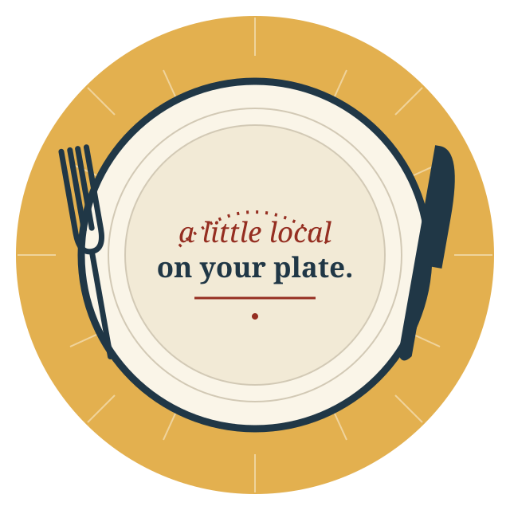

124 NORTH DOGWOOD AVENUE
CowboyCafe & Catering
The lunch break,
made local.
A Siler City cafe with daily specials and catering. Start with today’s posts, or call about the meal you have in mind.

THE DAILY BOARD
Good things
are on the board.
The cafe uses its Facebook page for daily plates, sides and dessert announcements. Go straight to its own posts for current details.
Open Cowboy Cafe on Facebook ↗A MEAL WITH PEOPLE
Something
to gather around.
Planning a meeting, a get-together or a group meal? Ask Cowboy Cafe & Catering about your date, group size and menu.
The county lists the business among its caterers. Menus, service arrangements, prices and availability need to be confirmed directly.
Start with a call ↗Or email Cowboycafe22@yahoo.com
COME FIND THE CAFE
North Dogwood.
Siler City.
124 North Dogwood AvenueSiler City, North Carolina 27344(919) 799-7104 ↗
Call for current opening hours before travelling. The schedule has not been confirmed for this independent concept.
Where can I find today’s menu?
Use the cafe’s own Facebook posts or call. This page does not copy a daily menu or confirm availability and prices.
Can I arrange catering here?
Please contact the business directly to discuss the details. This concept does not accept inquiries, bookings, orders or payments on the cafe’s behalf.
SILER CITY, NC
About this design study
Business identity, public contact and address were checked October 26, 2026 against the business’s public profile and county caterer list. Visual identity and copy are proposed by Manna Agency. Current business facts and any production website need the owner’s approval.